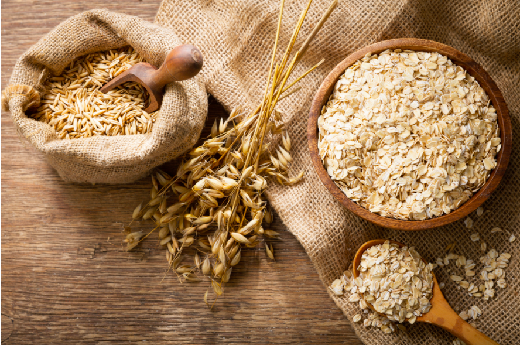

NEW BLOG POST
Yến mạch Chile đang trở thành một trong những lựa chọn phổ biến trong chế độ ăn uống của nhiều người...
Một trong những điểm nổi bật nhất của yến mạch Chile chính là giá trị dinh dưỡng mà nó mang lại...
Yến mạch Chile rất dễ chế biến và có thể được sử dụng trong nhiều món ăn khác nhau...
Yến mạch Chile là một lựa chọn hoàn hảo cho những ai muốn kiểm soát cân nặng và bảo vệ sức khỏe...
Chất xơ hòa tan trong yến mạch giúp làm sạch thành mạch máu, giảm cholesterol xấu và hỗ trợ tim mạch...
Yến mạch Chile giúp kiểm soát lượng đường trong máu, đặc biệt hữu ích với người bị tiểu đường...
Nhờ hàm lượng dinh dưỡng cao, yến mạch Chile giúp tăng cường sức đề kháng và hỗ trợ giảm cân hiệu quả...
Yến mạch Chile có chứa gluten không? Không, yến mạch Chile thường không chứa gluten...
Có thể dùng yến mạch Chile hàng ngày không? Có, bạn hoàn toàn có thể sử dụng yến mạch Chile hàng ngày...
Yến mạch Chile có phù hợp với người giảm cân không? Đúng vậy, yến mạch Chile giúp bạn cảm thấy no lâu và kiểm soát cân nặng...
Làm thế nào để chế biến yến mạch Chile đơn giản nhất? Bạn có thể nấu yến mạch thành cháo hoặc kết hợp với sữa chua và trái cây...
Yến mạch Chile có thể sử dụng cho trẻ em không? Hoàn toàn có thể, nó cung cấp nhiều dưỡng chất thiết yếu cho sự phát triển của trẻ...